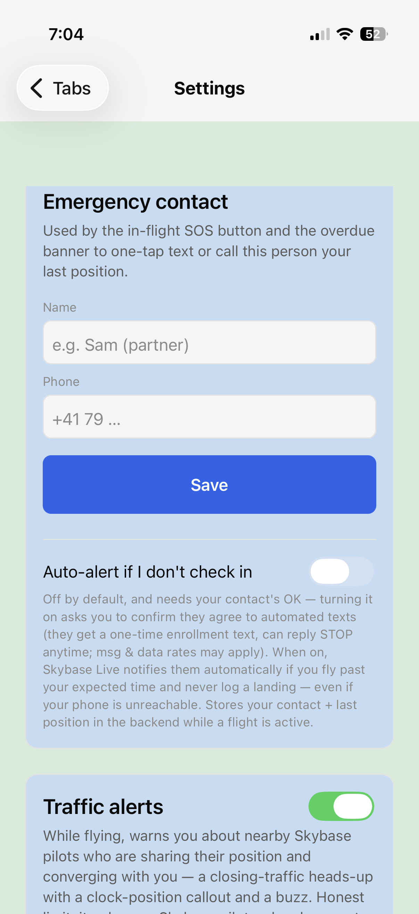
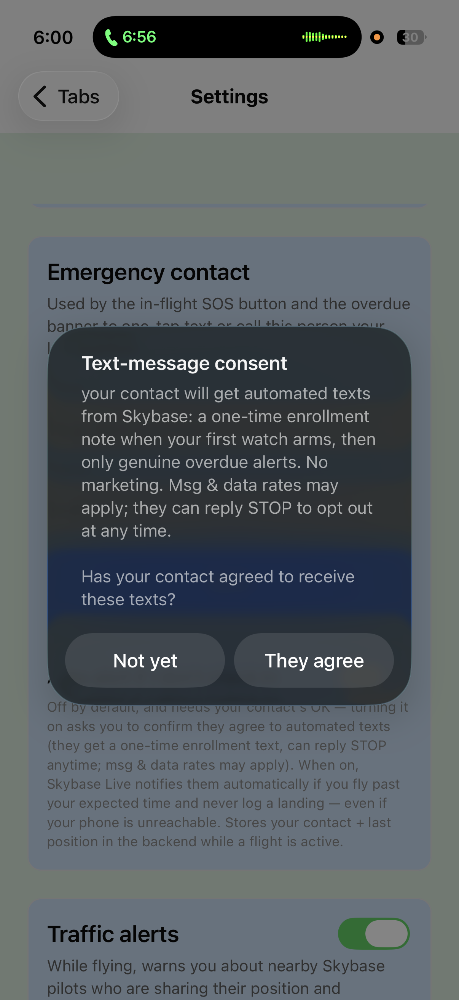
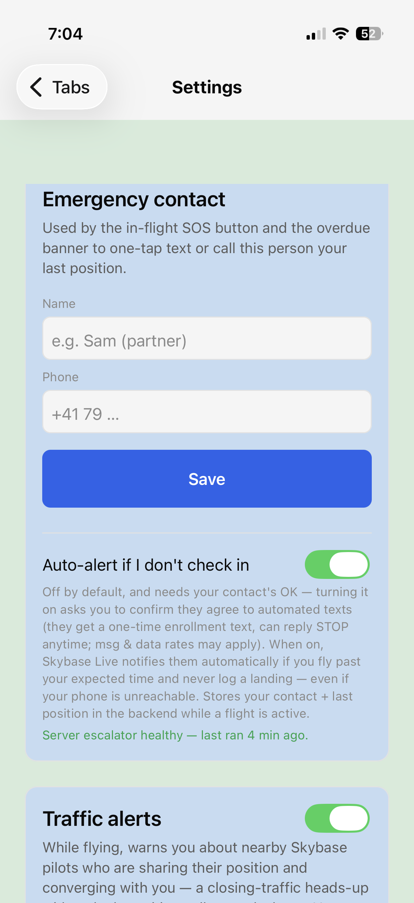

Skybase (paragliding companion app) · Operated by Karel Plevac, sole proprietor · Last updated: July 17, 2026
This page documents, for carrier review and for our users, exactly how Skybase's SMS safety-alert program collects consent and what messages it sends. The app requires an account to use, so the complete in-app flow is reproduced here with screenshots.
Opt-in type: VERBAL. The message recipient (the emergency contact) does not use the app. Consent is given verbally, person-to-person: the pilot asks their chosen contact directly whether they agree to receive automated safety texts. The app then (1) requires the pilot to attest to that verbal agreement via an explicit in-app confirmation, recording the timestamp, and (2) sends the contact a one-time enrollment SMS that restates the program in writing and offers STOP opt-out before any alert can ever be sent. The screenshots below show how the verbal consent is recorded and confirmed — the consent itself is verbal.
A Skybase user (a paraglider pilot) designates one emergency contact. If the pilot enables the optional automatic overdue alert and is ever overdue from a flight without checking in, Skybase sends that contact an automated SMS with the pilot's last known position. There is no marketing, ever. Typical volume is a few messages per year per contact, hard-capped at 3 messages per number per 24 hours.
The pilot asks their chosen emergency contact — in person or by phone — whether they agree to receive automated flight-safety texts from Skybase. This person-to-person verbal agreement is the consent; everything below records, confirms, and documents it.
In Settings → Emergency contact, the pilot enters the contact's name and phone number. The feature card discloses, before anything is enabled, that the contact will receive automated texts, will get a one-time enrollment text, can reply STOP at any time, and that message & data rates may apply. The automatic alert is off by default.

Turning the auto-alert on does not silently enable messaging. The app asks the pilot to actively confirm that the contact has verbally agreed to receive these texts. Choosing “Not yet” leaves the feature off; the moment of confirmation is recorded with a timestamp. Only after the pilot attests to the verbal agreement does the toggle switch on and the service arm.


Before any alert can ever be sent, the contact receives a one-time enrollment SMS that restates in writing what they verbally agreed to — identifying who enrolled them, what they will receive, and how to opt out:
Replying STOP opts the contact out permanently; Skybase never retries an opted-out number (the safety alert is then simply not sent — the pilot is told to designate someone else). HELP returns program information.
The actual safety alert, sent only when the pilot is genuinely overdue:
Sender: Skybase's automated safety service, operated by
Karel Plevac (sole proprietor).
Recipients: only the single emergency contact a user
personally designates and confirms consent for.
Frequency: one enrollment text, then alerts only on a
real overdue event — a few messages per year, capped at 3 per number
per 24 h.
Opt-out: reply STOP (honored permanently) ·
Help: reply HELP.
Fees: message & data rates may apply.
See also: Privacy Policy · Terms & Conditions